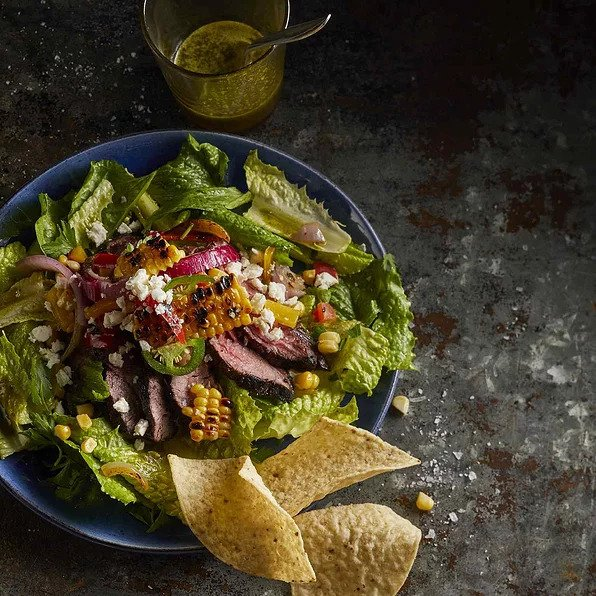

Cilantro-Lime Steak salad

Description
Whip up this cilantro-lime steak salad for a salad night with a Mexican twist.
Ingredients
Dressing
- 1 clove of garlic
- 3/4 teaspoon of minced fresh ginger
- 1/3 cup of lime juice
- 1/4 cup packed cilantro leaves
- 2 tablespoons of honey
- 2 teaspoons of balsamic vinegar
- Half teaspoon of salt, or to taste if preferred
- 1/3 cup of extra-virgin olive oil
- (Optional) 2 teaspoons of seeded and minced jalapeno pepper
Salad
- 1 pound of flat iron steak
- 1 cup of corn kennels
- 1 cup of chopped yellow bell pepper
- Half cup of thinly sliced red onion
- 1 diced plum tomato
- 8 cups of torn romaine lettuce
- Half cup of crumbled feta cheese
- 1 cup of tortilla chips, or to taste if preferred
- Salt and ground pepper to taste
- (Optional) Half thinly sliced jalapeno pepper
Steps
- To make the dressing, blend jalapeno, garlic, and ginger in a blender until
finely chopped. Add lime juice, cilantro, honey, balsamic, and salt; pulse to
blend. With blender running, drizzle in oil until well incorporated.
- Preheat oven broiler. Season steak with salt and black pepper, then transfer to
a foil-lined baking sheet.
- Broil 4 inches from heat until an instant-read thermometer inserted into the
center registers 135 degrees F (57 degrees C) for medium-rare, 3 to 4 minutes
per side. Let rest about 10 minutes, then thinly slice against the grain.
- Stir together corn, bell pepper, red onion, tomato, and jalapeno (if using) in
a bowl.
- Divide lettuce among 4 plates; drizzle each with about 2 tablespoons dressing.
Top with steak slices, then with corn mixture. Sprinkle with feta and garnish with
chips.
Cook's Note
Instead of 1 cup corn kernels, you can use kernels from 1 ear grilled fresh corn.
Original recipe